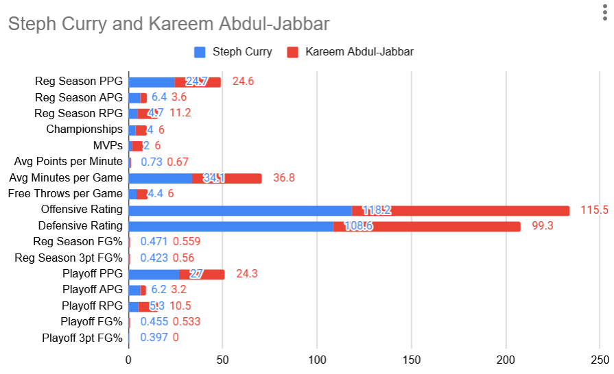

At #3 is Kareem Abdul-Jabbar:
Kareem Abdul-Jabbar is recognized as a legendary NBA player. Yet, many argue that Stephen Curry has an even bigger impact on basketball today when you look at his overall influence, efficiency, and revolutionary changes to the game. Curry's performance shines in key areas like points per minute, offensive rating, and scoring during playoffs, often matching or surpassing Kareem. He’s also known for being an excellent playmaker with more assists per game. Curry's exceptional skill in shooting three-pointers—hitting 42.3% in regular games and 39.7% in playoffs—has transformed the game. This accomplishment has shifted basketball strategies, changed how players position themselves on the court, and influenced training methods for players at all levels. Although Kareem boasts more championships (6 versus Curry's 4) and MVP awards (6 to Curry's 2), his style did not revolutionize the game in the same way Curry's has. Moreover, Kareem achieved his six championships with strong teammates, winning 5 alongside Magic Johnson and 1 with Oscar Robertson. Curry, however, has redefined the potential for guards and sparked a new era focused on perimeter dominance. His legacy goes beyond his personal success, leaving a lasting impact on the way basketball is played today.